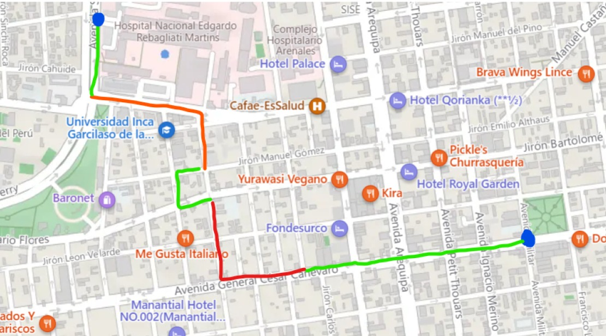

-
Incremente su seguridad de una forma más simple
Tan simple como revisar tus zonas aledañas o de destino.Siempre estaremos para ti de la mano de la seguridad ciudadana encargada de tu país
Comenzar - 
Conoce que tán seguras son tus calles en un solo lugar
Es sabido que nunca se puede estar completamente confiado de que no te pueda suceder algo al caminar por las calles de Lima. Al informarte con nosotros podrás visualizar todo el mapa de Lima Metropolitana teniendo como precaución tu seguridad. Únete a nosotros para transitar sin preocupaciones y con confianza de las autoridades nacionales
Descubre más